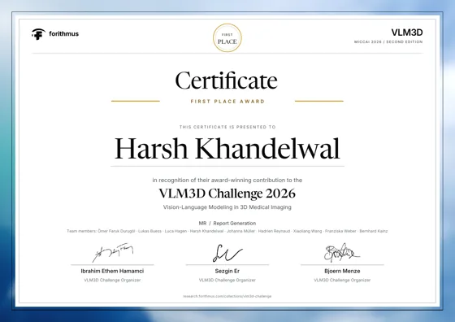
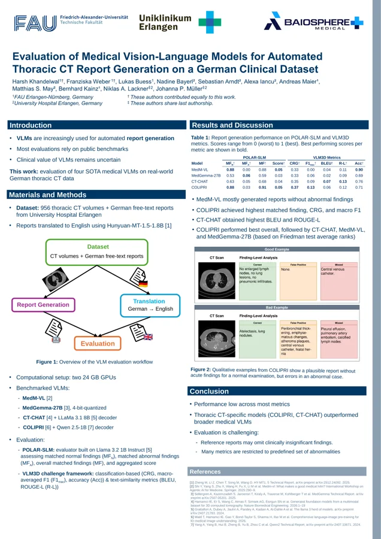

Exam: portfolio, non-contrast · Reason: “who is this?”
Harsh Khandelwal
ML researcher in Erlangen, working on 3D medical imaging, vision-language models and retrieval.
S1 Clinical history
About
I’m finishing my Master’s in Autonomy Technologies at FAU Erlangen–Nürnberg. I just handed in my thesis, which asks how well today’s AI models can read a chest CT scan: spotting what’s wrong, showing where it is, and writing it up as a report.
I’m still early in my research career, and most of what I know I’ve learned working in teams with people I could learn a lot from. The part I enjoy most is checking whether something really works: running one more experiment, or finding out that a good score was good for the wrong reason.
Before my Master’s I spent two years building software at a company in India, and I still like making things people actually use, from tools at work to small apps I build for myself.
- Now
- Data Science Working Student, Siemens Energy, Nuremberg
- Study
- M.Sc. Autonomy Technologies, FAU Erlangen–Nürnberg, expected March 2027
- Awards
- 3× first place and 1× second, VLM3D Challenge at MICCAI 2026
- Languages
- English C1, German A2
S2 Findings
Research
Master’s thesis · FAU, AIBE / IDEA Lab · submitted November 2026
From Scan to Report: Detecting, Segmenting and Reporting Findings in Chest CT
Reading a chest CT means three things: detecting the abnormalities, locating them, and writing them up in a report. The thesis takes each step in turn and measures where the current state of the art actually stands, on CT-RATE and ReXGroundingCT. Across all three, task design and the choice of metric change how pretrained encoders should be used, and judging clinical accuracy still needs unseen data and expert review.
- Detecting8 frozen CT encoders compared; attention over FlexiCT tokens reaches 0.8695 AUROC
- Segmentingadapting VoxTell’s text-to-mask head raises Dice by 37.8%
- ReportingCRG can’t tell whether a report reflects the scan; GREEN and CRIMSON can
Supervised by Prof. Dr. Bernhard Kainz and Dr. Johanna Müller.
Most of this is collaborative research, and several repositories are private. Links are given where code or models are public.
-
VLM3D: 3D CT and MR classification and report generation
3× 1st, 1× 2ndPart of the FAU teams that won CT abnormality classification, CT report generation and MR report generation, and placed second in MR abnormality classification (certificates). I built a benchmarking framework comparing 10 3D image-encoder families on 50,183 chest CT volumes, cutting storage from a projected 13 TB to 260 GB. For reports, I showed that end-to-end generators were barely grounded in the scan, and that a classify-then-assemble pipeline beat the baseline by +0.165 CRG.
-
Claim2Source
1st of 37Multilingual retrieval of the scientific paper behind a claim made on social media. I implemented the LLM-based evidence verification that delivered the decisive score gain; the final system reached MRR@5 = 0.7628 across English, German and French and improved on the baseline by 75%. Co-authored two CLEF papers.
-
Text-conditioned 3D grounding in chest CT
11th of 53Locating findings from a radiology report inside the 3D scan. Freezing the VoxTell backbone and training only the grounding head lifted leaderboard Dice from 0.280 to 0.332. Analysis showed missed lesions, not mask quality, were the bottleneck. Distributed training with NVMe staging raised GPU utilisation from 10% to 95%, a 7× speedup.
-
Clinical safety in radiology translation
45% corruptedBenchmarked 13 translation systems on 296 German–English radiology reports. Fluent output can still flip a negation or drop a measurement: BLEU mis-ranks clinical safety, while claim-entailment and GREEN checks catch factual corruption far better (AUC 0.84–0.92).
-
Medical VLMs on real German CT reports
956 scansEvaluated four state-of-the-art medical vision-language models (MedM-VL, MedGemma-27B, CT-CHAT, COLIPRI) on 956 thoracic CT volumes with German free-text reports. Models built specifically for thoracic CT clearly beat broader medical VLMs, but scores stayed low overall. Presented at BAIOSPHERE MEDICAL 2026 (poster).
-
PsyTrain
Apple Vision ProA virtual psychiatric patient for practising history-taking, made for Apple Vision Pro. Students build a case in three clicks, talk to the patient out loud in a 3D consultation room, and get turn-by-turn feedback afterwards. The patient can drift off topic or get angry, and its body language follows the conversation. I built most of it: the avatar, live voice conversation, room and patient setup.
S3 Prior studies
Work
-
Oct 2025 – now
Data Science Working Student
Siemens Energy, Nuremberg
Built a document knowledge base over 30,000+ documents for a multi-agent RAG system answering questions about historical offers. Automated offer generation and escalation, replacing a manual process that took several days, and built a Streamlit-in-Snowflake app that turned a multi-hour SAP data task into one click. Presenter in the company-wide AI/ML community.
-
Feb 2025 – Sep 2025
AI Intern
National Instruments / Emerson, Dresden
Inventor on a US patent application for Fast Signature Matching, plus two invention disclosures; presented the algorithms at NI Tech in Austin and received a performance bonus. Built a manufacturing debug assistant using similarity search over graphical data that reached 80% accuracy and secured funding for a pilot. Implemented ensemble drift detection against a digital-twin baseline.
-
Jun 2024 – Dec 2024
Student Assistant, ML / Radar
Institute of Microwaves and Photonics, FAU
Developed radar-based human pose estimation using ray-tracing-enhanced datasets, ran radar and OptiTrack motion-capture studies, and evaluated lightweight architectures to cut RNN inference time.
-
May 2021 – Sep 2023
Consultant → Associate Consultant
Adnate IT Solutions, Jaipur
Built software and process automation for a major Indian private-sector bank, and led a team delivering several projects.
S4 Incidental findings
Models, tools and other builds
From the thesis
-
COLIPRI–Qwen report generator
CT report generation from a frozen COLIPRI 3D encoder, a trained projector and Qwen2.5-1.5B, with optional German output.
-
RadBERT CT-RATE classifiers
Report-to-label classifiers for 18 CT findings, in English and German, used to score generated reports.
-
Report-generation evaluation pipeline
One command from generated reports to classification scores, CRG and NLG metrics, for English and German reports.
-
4-bit MedGemma-27B and Gemma 4 31B
Pre-quantized models (MedGemma, Gemma 4) that fit on 24 GB GPUs, used to run CT report generation offline on hospital hardware. QLoRA fine-tuning code is public.
Other builds
-
Scientific Discovery Swarm
Single-use research agents that read the literature, map gaps between fields and propose testable hypotheses, with a human approving every verdict. Built for the All Things Agentic hackathon on Google ADK, Vertex AI and Cloud Run.
-
Paper Switch
Turns scientific PDFs into narrated audio with synchronised highlighting, including spoken equations. Can run fully locally with vLLM and Kokoro TTS.
-
Parley
A history RPG: put real historical figures in one room and watch them argue in character, rendered like a console-era game.
-
Petodoro
A tiny desktop pet with a pomodoro timer, written in Rust. Runs on Linux, Windows, macOS and Android in about 5 MB of RAM.
S5 Attachments
Awards and papers
VLM3D Challenge 2026 (Vision-Language Modeling in 3D Medical Imaging) at MICCAI 2026. Team awards with colleagues at FAU Erlangen–Nürnberg.
1STCT abnormality classification
1STCT report generation

1STMR report generation

2NDMR abnormality classification

1STof 37 teams, CLEF CheckThat! 2026, Task 1: source retrieval for scientific web claims.
Papers and posters
-
CLEF 2026 Working Notes (CEUR-WS)
Claim2Source at CheckThat! 2026: Improving Multilingual Scientific Claim-Source Retrieval with Verification-based Re-Ranking
-
Best of CLEF 2025 Labs, Springer LNCS 17087
Scientific Claim-Source Retrieval Revisited: A Comparative Study of Style Transfer and Re-Ranking
-
Poster, BAIOSPHERE MEDICAL 2026, Erlangen
Evaluation of Medical Vision-Language Models for Automated Thoracic CT Report Generation on a German Clinical Dataset

Open the full poster ↗
S6 Impression
Contact
Curious ML researcher who likes checking whether things really work. No acute findings. Recommend follow-up by email.
deharshkhandelwal@gmail.comLinkedIn ↗ GitHub ↗ Hugging Face ↗
Report signed: H. Khandelwal · 2026